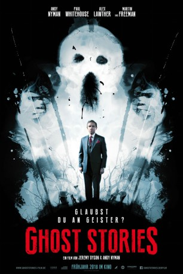

#9461 Ghost Stories
 
 IMDB-Wertung: 6.4 / 10
IMDB-Wertung: 6.4 / 10  Metascore: 68
Metascore: 68 
Professor Philip Goodman ist voll und ganz davon überzeugt, dass übernatürliche Phänomene jedweder Art Unfug sind. Deswegen nimmt der bekannte Skeptiker und Moderator einer Entlarvungs-Fernsehsendung namens „Psychic Cheats“ auch nur zu gerne die Gelegenheit war, drei paranormale Fälle zu untersuchen, in der festen Überzeugung, diese schon bald als Schwindel entlarvt zu haben. An diesen Fällen scheiterte einst schon sein Idol Charles Cameron das sich deswegen aus der Öffentlichkeit zurückzog und lange als verschollen galt, bis er Goodman überraschend kontaktiert. Die gruseligen Geschichten, die Goodman auf dessen Drängen untersucht, zwingen ihn schon bald dazu, seine Überzeugungen zu revidieren. Es geht um den Irrenhaus-Nachtwächter Tony Matthews die furchtbare nächtliche Begegnung des jungen Simon Rifkind und den Geschäftsmann Mike Priddle der eine schreckliche Last mit sich herumträgt…
Jahr: 2017
Dauer: 98 Minuten
FSK: 16
Land: England Studio: Concorde FilmverleihTonspuren: DTS - ,
Untertitel: Englisch, Deutsch,
Auflösung: 1080p (1920x800) Größe: 5120 MB
Genre: Horror, Drama
Regisseur: Jeremy Dyson, Andy Nyman
Drehbuch: Jeremy Dyson, Andy Nyman
Soundtrack: Haim Frank Ilfman
Darsteller:
 Andy Nyman als Professor Goodman
Andy Nyman als Professor Goodman Martin Freeman als Mike Priddle
Martin Freeman als Mike Priddle Paul Whitehouse als Tony Matthews
Paul Whitehouse als Tony Matthews- Alex Lawther als Simon Rifkind
- Paul Warren als Woolly
 Kobna Holdbrook-Smith als Father Emery
Kobna Holdbrook-Smith als Father Emery- Nicholas Burns als Mark van Rhys
- Lesley Harcourt als BBC Local Newsreader
- Amy Doyle als Esther Goodman
- Deborah Wastell als Mrs. Goodman
- Daniel Hill als Mr. Goodman
- Christine Dalby als Beth Hooper
- Ramzan Miah als Esters's Boyfriend
- Benji Ming als Headmaster
 Ryan Oliva als Hellion
Ryan Oliva als Hellion- Samuel Bottomley als Young Goodman
- Derren Brown als Betty
- Anthony Davis als Radio DJ
- Jill Halfpenny als Peggy Van Rhys
- Louise Atkins als Steph
- Maggie McCarthy als Jean Hooper
- Joe Osborne als Mr. Rifkind
- Maria Major als Mrs. Rifkind
- Emily Carding als Maria Priddle
- Leonard Byrne als Charles Cameron
- Macie Allen als Tilly
- Jake Davies als Desi Callahan / Kojak
- Oliver Woollford als Nico Freer
- Callum Goulden als Marcus Perry
- Mike Aarons als Mike from Barnett
- Elaine Dyson als Mrs. Rifkind
- Billy Sneddon als National Breakdown Assistant Caller
- Julie Waring als Psychic Reading Audience Member (uncredited)
- Richard Waring als Psychic Reading Audience Member (uncredited)
Datei: X:\2017(G-M)\Ghost Stories (2017, FSK16, 1920x800).mkv seit 03.09.2018
Festplatte: HD 2017(A-Z)-2018(A-F)
 Es gibt insgesamt 148 Filme in der Gruppe '2017(G-M)'
Es gibt insgesamt 148 Filme in der Gruppe '2017(G-M)'